library(tidyverse)
library(skimr)
library(infer)
library(broom)Exercise 11
Load Data
d <- read_csv("https://raw.githubusercontent.com/difiore/ada-2024-datasets/main/AVONETdataset1.csv", col_names = TRUE)Winnow dataset:
d <- d %>% select(Species1, Family1, Order1, Beak.Length_Culmen, Beak.Width, Beak.Depth, Tarsus.Length, Wing.Length, Tail.Length, Mass, Habitat, Migration, Trophic.Level, Trophic.Niche, Min.Latitude, Max.Latitude, Centroid.Latitude, Primary.Lifestyle, Range.Size)
skim(d)| Name | d |
| Number of rows | 11009 |
| Number of columns | 19 |
| _______________________ | |
| Column type frequency: | |
| character | 7 |
| numeric | 12 |
| ________________________ | |
| Group variables | None |
Variable type: character
| skim_variable | n_missing | complete_rate | min | max | empty | n_unique | whitespace |
|---|---|---|---|---|---|---|---|
| Species1 | 0 | 1.00 | 9 | 36 | 0 | 11009 | 0 |
| Family1 | 0 | 1.00 | 7 | 18 | 0 | 243 | 0 |
| Order1 | 0 | 1.00 | 10 | 19 | 0 | 36 | 0 |
| Habitat | 98 | 0.99 | 4 | 14 | 0 | 11 | 0 |
| Trophic.Level | 5 | 1.00 | 8 | 9 | 0 | 4 | 0 |
| Trophic.Niche | 10 | 1.00 | 8 | 21 | 0 | 10 | 0 |
| Primary.Lifestyle | 0 | 1.00 | 6 | 11 | 0 | 5 | 0 |
Variable type: numeric
| skim_variable | n_missing | complete_rate | mean | sd | p0 | p25 | p50 | p75 | p100 | hist |
|---|---|---|---|---|---|---|---|---|---|---|
| Beak.Length_Culmen | 0 | 1.00 | 26.36 | 24.39 | 4.50 | 14.70 | 19.90 | 28.50 | 414.20 | ▇▁▁▁▁ |
| Beak.Width | 0 | 1.00 | 6.58 | 5.15 | 0.70 | 3.60 | 5.00 | 7.70 | 88.90 | ▇▁▁▁▁ |
| Beak.Depth | 0 | 1.00 | 8.06 | 7.59 | 1.00 | 3.80 | 5.80 | 9.40 | 110.90 | ▇▁▁▁▁ |
| Tarsus.Length | 0 | 1.00 | 28.73 | 24.84 | 2.50 | 17.40 | 22.00 | 31.30 | 481.20 | ▇▁▁▁▁ |
| Wing.Length | 0 | 1.00 | 124.78 | 93.44 | 0.10 | 66.80 | 91.50 | 145.50 | 789.90 | ▇▂▁▁▁ |
| Tail.Length | 0 | 1.00 | 86.65 | 61.08 | 0.10 | 50.20 | 68.70 | 99.90 | 812.80 | ▇▁▁▁▁ |
| Mass | 0 | 1.00 | 267.15 | 1883.03 | 1.90 | 15.00 | 35.50 | 121.00 | 111000.00 | ▇▁▁▁▁ |
| Migration | 23 | 1.00 | 1.29 | 0.62 | 1.00 | 1.00 | 1.00 | 1.00 | 3.00 | ▇▁▁▁▁ |
| Min.Latitude | 57 | 0.99 | -6.44 | 22.37 | -85.58 | -21.22 | -7.15 | 8.07 | 68.08 | ▁▃▇▃▁ |
| Max.Latitude | 57 | 0.99 | 11.51 | 23.32 | -65.12 | -3.33 | 9.00 | 22.07 | 85.01 | ▁▃▇▂▁ |
| Centroid.Latitude | 57 | 0.99 | 2.95 | 22.07 | -71.04 | -9.73 | -0.22 | 15.28 | 78.43 | ▁▃▇▂▁ |
| Range.Size | 57 | 0.99 | 2578859.38 | 7629310.06 | 0.88 | 54052.87 | 416076.61 | 2187040.21 | 136304432.20 | ▇▁▁▁▁ |
The 7 categorical variables are Species1, Family1, Order1, Habitat, Trophic.Level, Trophic.Niche, and Primary.Lifestyle.
The 12 numeric variables are Beak.Length_Culmen, Beak.Width, Beak.Depth, Tarsus.Length, Wing.Length, Tail.Length, Mass, Migration, Min.Latitude, Max.Latitude, Centroid.Latitude, and Range.Size.
One Factor ANOVA
Step 1
Boxplots of log(Mass) in relation to Trophic.Level and Migration:
p1 <- ggplot(data=subset(d, !is.na(Trophic.Level)), aes(x=Trophic.Level, y=log(Mass)))+geom_boxplot(color="blue", fill="blue", alpha=0.2)
p1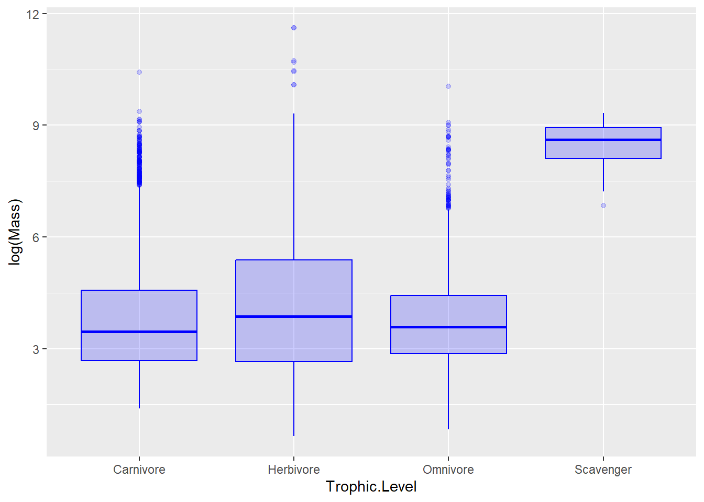
p2 <- ggplot(data=subset(d, !is.na(Migration)), aes(x=as.factor(Migration), y=log(Mass)))+geom_boxplot(color="blue", fill="blue", alpha=0.2)
p2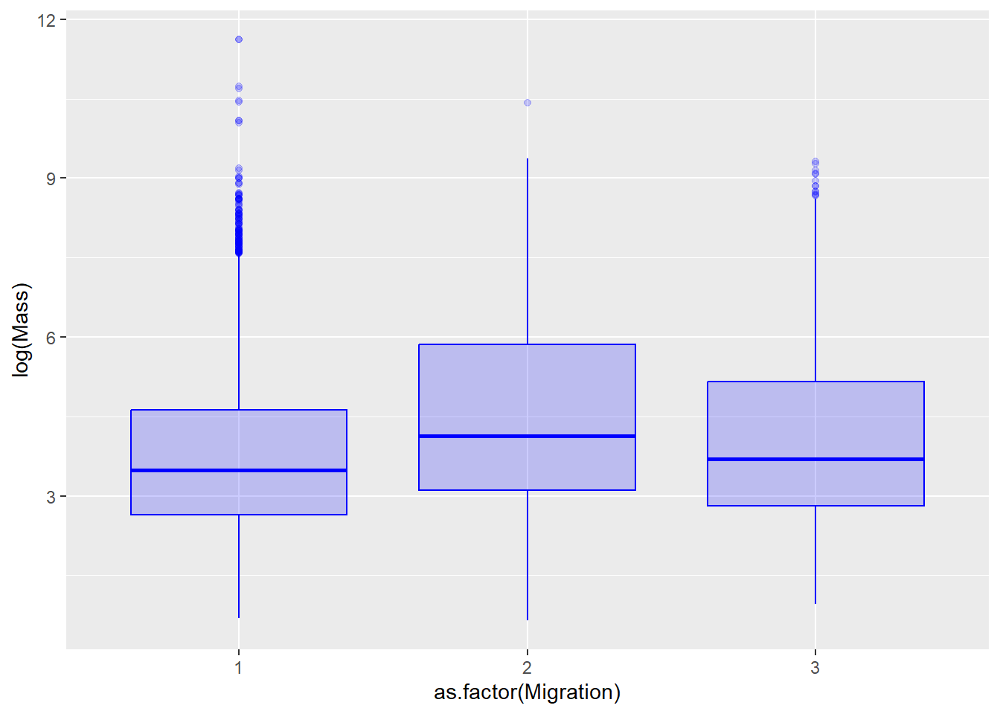
Step 2
m1 <- lm(log(Mass)~Trophic.Level, d)
summary(m1)
Call:
lm(formula = log(Mass) ~ Trophic.Level, data = d)
Residuals:
Min 1Q Median 3Q Max
-3.4229 -1.1551 -0.3028 0.8982 7.5526
Coefficients:
Estimate Std. Error t value Pr(>|t|)
(Intercept) 3.80834 0.01967 193.632 < 2e-16 ***
Trophic.LevelHerbivore 0.25639 0.03406 7.528 5.54e-14 ***
Trophic.LevelOmnivore 0.01422 0.04116 0.345 0.73
Trophic.LevelScavenger 4.63189 0.34447 13.446 < 2e-16 ***
---
Signif. codes: 0 '***' 0.001 '**' 0.01 '*' 0.05 '.' 0.1 ' ' 1
Residual standard error: 1.538 on 11000 degrees of freedom
(5 observations deleted due to missingness)
Multiple R-squared: 0.02094, Adjusted R-squared: 0.02067
F-statistic: 78.42 on 3 and 11000 DF, p-value: < 2.2e-16d$Migration <- as.factor(d$Migration)
m2 <- lm(log(Mass)~Migration, d)
summary(m2)
Call:
lm(formula = log(Mass) ~ Migration, data = d)
Residuals:
Min 1Q Median 3Q Max
-3.8924 -1.1769 -0.3088 0.9152 7.8427
Coefficients:
Estimate Std. Error t value Pr(>|t|)
(Intercept) 3.77457 0.01636 230.710 < 2e-16 ***
Migration2 0.75971 0.04731 16.059 < 2e-16 ***
Migration3 0.37647 0.05155 7.303 3.02e-13 ***
---
Signif. codes: 0 '***' 0.001 '**' 0.01 '*' 0.05 '.' 0.1 ' ' 1
Residual standard error: 1.535 on 10983 degrees of freedom
(23 observations deleted due to missingness)
Multiple R-squared: 0.02563, Adjusted R-squared: 0.02546
F-statistic: 144.5 on 2 and 10983 DF, p-value: < 2.2e-16The F-Statistic of each model is large enough to reject the null hypothesis that the F value is equal to zero.
Migration level 1 is the reference level.
Here is the same model with Migration releveled to 3.
s <- d
s$Migration<-relevel(s$Migration, ref=3)
m3 <- lm(log(Mass)~Migration, s)
summary(m3)
Call:
lm(formula = log(Mass) ~ Migration, data = s)
Residuals:
Min 1Q Median 3Q Max
-3.8924 -1.1769 -0.3088 0.9152 7.8427
Coefficients:
Estimate Std. Error t value Pr(>|t|)
(Intercept) 4.15104 0.04889 84.909 < 2e-16 ***
Migration1 -0.37647 0.05155 -7.303 3.02e-13 ***
Migration2 0.38324 0.06603 5.804 6.67e-09 ***
---
Signif. codes: 0 '***' 0.001 '**' 0.01 '*' 0.05 '.' 0.1 ' ' 1
Residual standard error: 1.535 on 10983 degrees of freedom
(23 observations deleted due to missingness)
Multiple R-squared: 0.02563, Adjusted R-squared: 0.02546
F-statistic: 144.5 on 2 and 10983 DF, p-value: < 2.2e-16Step 3
m <- aov(log(Mass) ~ Migration, data = d)
posthoc <- TukeyHSD(m, which = "Migration", ordered = TRUE, conf.level = 0.95)
plot(posthoc, xlim=c(-0.5, 1))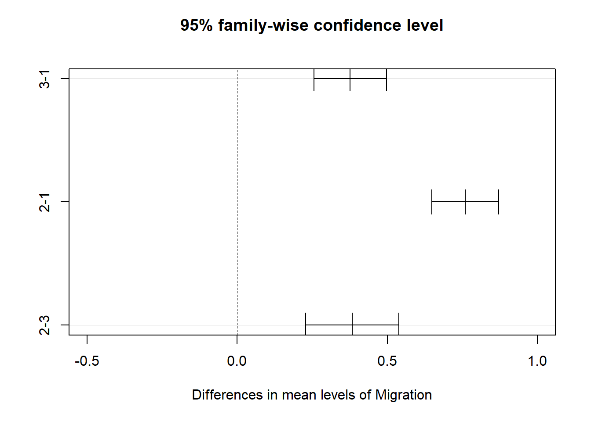
All levels of migration are significantly different from the null, which would hold if the confidence intervals intersected with zero. The 2-1 categories differ the most from each other compared to other category combinations.
Step 4
create log.Mass variable because the specify function does not like log(Mass)
d <- d %>%
mutate(log.Mass=log(Mass))Permute the F stat with the {infer} package
permuted.F <- d %>%
specify(log.Mass ~ Trophic.Level) %>% # specify model
hypothesize(null = "independence") %>% # null hypothesis of independence
generate(reps = 1000, type = "permute") %>% # generate permutations
calculate(stat = "F") # calculate the F statistic for the AOVWarning: Removed 5 rows containing missing values.Create an “original” F stat using aov function
original.F <- aov(data = d, log.Mass ~ Trophic.Level) %>%
tidy() %>%
filter(term=="Trophic.Level")
visualize(permuted.F) +
shade_p_value(obs_stat=original.F$statistic, direction="greater")Warning in min(diff(unique_loc)): no non-missing arguments to min; returning
Inf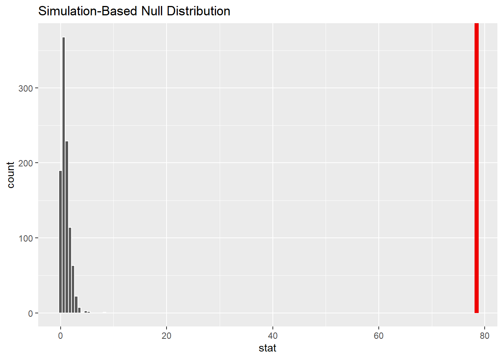
Generate p value
p.value <- permuted.F %>%
get_p_value(obs_stat = original.F$statistic, direction="greater")Warning: Please be cautious in reporting a p-value of 0. This result is an approximation
based on the number of `reps` chosen in the `generate()` step.
ℹ See `get_p_value()` (`?infer::get_p_value()`) for more information.p.value# A tibble: 1 × 1
p_value
<dbl>
1 0The p value is zero, allowing us to reject the null hypothesis that there is no difference in log(Mass) between the trophic level groups.
Challenge 2
Step 1
Get residuals, add to dataframe
rbl <- lm(log(Beak.Length_Culmen)~log(Mass), d)
rtl <- lm(log(Tarsus.Length)~log(Mass), d)
d <- d %>% mutate(
rel.beak.length=rbl$residuals,
rel.tarsus.length=rtl$residuals
)
head(d)# A tibble: 6 × 22
Species1 Family1 Order1 Beak.Length_Culmen Beak.Width Beak.Depth Tarsus.Length
<chr> <chr> <chr> <dbl> <dbl> <dbl> <dbl>
1 Accipit… Accipi… Accip… 27.7 10.6 14.7 62
2 Accipit… Accipi… Accip… 20.6 8.8 11.6 43
3 Accipit… Accipi… Accip… 25 8.6 12.7 58.1
4 Accipit… Accipi… Accip… 22.5 8.9 11.9 61.2
5 Accipit… Accipi… Accip… 21.1 8.7 11.1 46.4
6 Accipit… Accipi… Accip… 20 6.6 12 48.7
# ℹ 15 more variables: Wing.Length <dbl>, Tail.Length <dbl>, Mass <dbl>,
# Habitat <chr>, Migration <fct>, Trophic.Level <chr>, Trophic.Niche <chr>,
# Min.Latitude <dbl>, Max.Latitude <dbl>, Centroid.Latitude <dbl>,
# Primary.Lifestyle <chr>, Range.Size <dbl>, log.Mass <dbl>,
# rel.beak.length <dbl>, rel.tarsus.length <dbl>Step 2
Relative Tarsus Length vs. Primary Lifestyle
p3 <- ggplot(data=subset(d, !is.na(Primary.Lifestyle)), aes(x=Primary.Lifestyle, y=rel.tarsus.length))+geom_boxplot(color="blue", fill="blue", alpha=0.2)
p3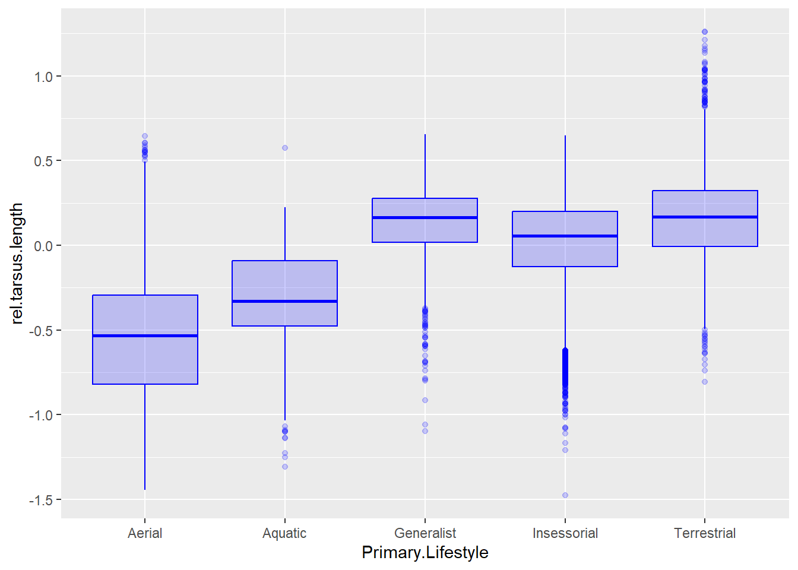
Relative Beak Length vs. Trophic Niche
p4 <- ggplot(data=subset(d, !is.na(Trophic.Niche)), aes(x=Trophic.Niche, y=rel.beak.length))+geom_boxplot(color="blue", fill="blue", alpha=0.2)
p4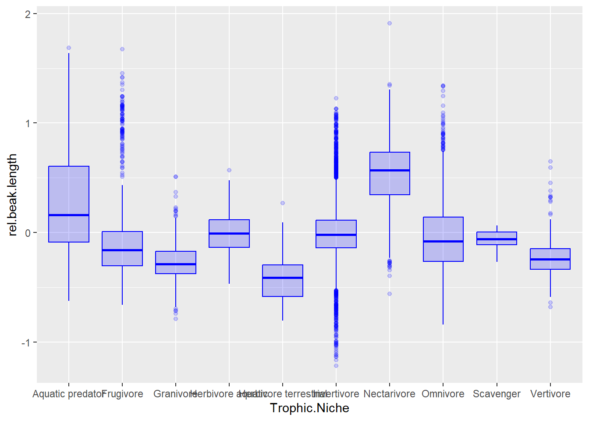
Step 3
m.aov <- aov(data = subset(d, !is.na(Migration)), log(Range.Size) ~ Migration)
summary(m.aov) Df Sum Sq Mean Sq F value Pr(>F)
Migration 2 8071 4035 520.3 <2e-16 ***
Residuals 10934 84798 8
---
Signif. codes: 0 '***' 0.001 '**' 0.01 '*' 0.05 '.' 0.1 ' ' 1
49 observations deleted due to missingnessThe range size does appear to be significantly related to the migration categorization.
m.lm <- lm(log(Range.Size) ~ Migration, data = subset(d, !is.na(Migration)))
tidy(m.lm)# A tibble: 3 × 5
term estimate std.error statistic p.value
<chr> <dbl> <dbl> <dbl> <dbl>
1 (Intercept) 12.0 0.0297 405. 0
2 Migration2 1.78 0.0861 20.7 1.02e- 93
3 Migration3 2.52 0.0938 26.8 1.14e-153Categories 2 and 3 are significantly different from reference level of 1. Relevel to 3:
d$Migration<-relevel(d$Migration, ref=3)
m.lm2 <- lm(log(Range.Size) ~ Migration, data = subset(d, !is.na(Migration)))
tidy(m.lm2)# A tibble: 3 × 5
term estimate std.error statistic p.value
<chr> <dbl> <dbl> <dbl> <dbl>
1 (Intercept) 14.6 0.0890 164. 0
2 Migration1 -2.52 0.0938 -26.8 1.14e-153
3 Migration2 -0.732 0.120 -6.10 1.13e- 9Categories 1 and 2 are significantly different from the reference level of 3.
Post-Hoc Tukey HSD:
posthoc2 <- TukeyHSD(m.aov, which = "Migration", ordered = TRUE, conf.level = 0.95)
plot(posthoc2, xlim=c(-1,3))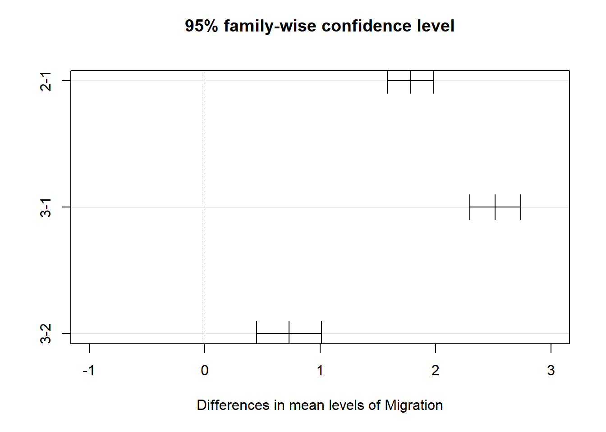
The post-hoc Tukey Honest Significant Differences test shows the largest difference between categories is between 1 and 3. All categories, however, are significantly different from one another.
Step 4
Get Passeriformes:
pass <- d %>% filter(Order1=="Passeriformes")Relative Beak Length vs Primary Lifestyle
p5 <- ggplot(data=subset(pass, !is.na(Primary.Lifestyle)), aes(x=Primary.Lifestyle, y=rel.beak.length))+geom_boxplot(color="blue", fill="blue", alpha=0.2)
p5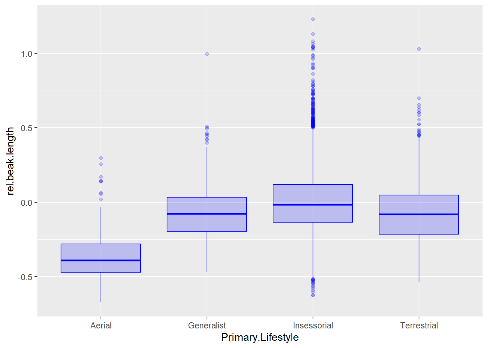
passRBL_PL <- aov(data = subset(pass, !is.na(Primary.Lifestyle)), rel.beak.length ~ Primary.Lifestyle)
summary(passRBL_PL) Df Sum Sq Mean Sq F value Pr(>F)
Primary.Lifestyle 3 18.2 6.067 130.2 <2e-16 ***
Residuals 6610 307.9 0.047
---
Signif. codes: 0 '***' 0.001 '**' 0.01 '*' 0.05 '.' 0.1 ' ' 1passRBL_PL.lm <- lm(rel.beak.length ~ Primary.Lifestyle, data = subset(pass, !is.na(Primary.Lifestyle)))
summary(passRBL_PL.lm)
Call:
lm(formula = rel.beak.length ~ Primary.Lifestyle, data = subset(pass,
!is.na(Primary.Lifestyle)))
Residuals:
Min 1Q Median 3Q Max
-0.6314 -0.1380 -0.0172 0.1118 1.2241
Coefficients:
Estimate Std. Error t value Pr(>|t|)
(Intercept) -0.34950 0.02158 -16.19 <2e-16 ***
Primary.LifestyleGeneralist 0.27926 0.02306 12.11 <2e-16 ***
Primary.LifestyleInsessorial 0.35342 0.02181 16.20 <2e-16 ***
Primary.LifestyleTerrestrial 0.27924 0.02249 12.42 <2e-16 ***
---
Signif. codes: 0 '***' 0.001 '**' 0.01 '*' 0.05 '.' 0.1 ' ' 1
Residual standard error: 0.2158 on 6610 degrees of freedom
Multiple R-squared: 0.05581, Adjusted R-squared: 0.05538
F-statistic: 130.2 on 3 and 6610 DF, p-value: < 2.2e-16Relative Beak Length vs Trophic Level
p6 <- ggplot(data=subset(pass, !is.na(Trophic.Level)), aes(x=Trophic.Level, y=rel.beak.length))+geom_boxplot(color="blue", fill="blue", alpha=0.2)
p6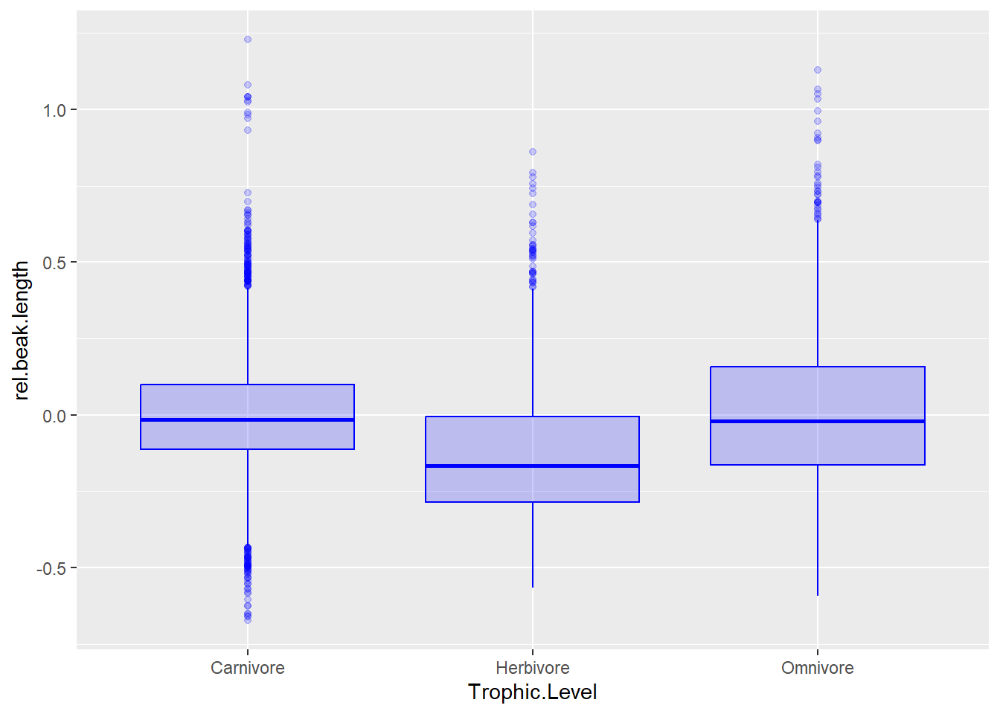
passRBL_TL <- aov(data = subset(pass, !is.na(Trophic.Level)), rel.beak.length ~ Trophic.Level)
summary(passRBL_TL) Df Sum Sq Mean Sq F value Pr(>F)
Trophic.Level 2 16.31 8.154 174 <2e-16 ***
Residuals 6611 309.81 0.047
---
Signif. codes: 0 '***' 0.001 '**' 0.01 '*' 0.05 '.' 0.1 ' ' 1passRBL_TL.lm <- lm(rel.beak.length ~ Trophic.Level, data = subset(pass, !is.na(Trophic.Level)))
summary(passRBL_TL.lm)
Call:
lm(formula = rel.beak.length ~ Trophic.Level, data = subset(pass,
!is.na(Trophic.Level)))
Residuals:
Min 1Q Median 3Q Max
-0.67045 -0.13692 -0.02063 0.11129 1.23116
Coefficients:
Estimate Std. Error t value Pr(>|t|)
(Intercept) -0.003170 0.003501 -0.906 0.36518
Trophic.LevelHerbivore -0.118713 0.006956 -17.066 < 2e-16 ***
Trophic.LevelOmnivore 0.017902 0.006606 2.710 0.00675 **
---
Signif. codes: 0 '***' 0.001 '**' 0.01 '*' 0.05 '.' 0.1 ' ' 1
Residual standard error: 0.2165 on 6611 degrees of freedom
Multiple R-squared: 0.05001, Adjusted R-squared: 0.04972
F-statistic: 174 on 2 and 6611 DF, p-value: < 2.2e-16Step 5
Check for similar variances:
stats <- pass %>% group_by(Primary.Lifestyle, Trophic.Level) %>%
summarize("mean(rel.beak.length)" = mean(rel.beak.length),
"sd(rel.beak.length)"= sd(rel.beak.length))`summarise()` has grouped output by 'Primary.Lifestyle'. You can override using
the `.groups` argument.max(stats$`sd(rel.beak.length)`)/min(stats$`sd(rel.beak.length)`)[1] 2.453596# check that variances in each group are roughly equal (ratio of max/min is <2)
p7 <- ggplot(data=subset(pass, !is.na(Trophic.Level)), aes(y = rel.beak.length, x = Primary.Lifestyle)) + geom_boxplot() +
facet_wrap(~Trophic.Level, ncol=4) +
xlab("Primary Lifestyle") + ylab("Relative Beak Length")
# and let's plot what the data look like
# p <- p + geom_point() # uncommenting this shows all points
#p <- p + stat_summary(data=d, aes(y = femur_length, x = sex),
# fun = base::mean,
# make sure we use {base} version of mean
# color = "darkgreen", geom = "point", shape = 8, size = 6)
#p
p7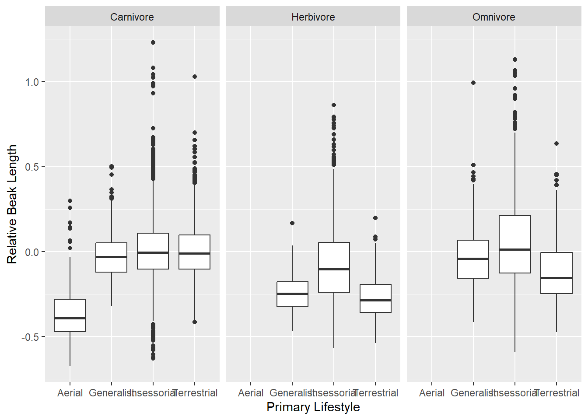
Check each ANOVA separately:
summary(aov(data=pass, rel.beak.length ~ Primary.Lifestyle)) Df Sum Sq Mean Sq F value Pr(>F)
Primary.Lifestyle 3 18.2 6.067 130.2 <2e-16 ***
Residuals 6610 307.9 0.047
---
Signif. codes: 0 '***' 0.001 '**' 0.01 '*' 0.05 '.' 0.1 ' ' 1summary(aov(data=pass, rel.beak.length ~ Trophic.Level)) Df Sum Sq Mean Sq F value Pr(>F)
Trophic.Level 2 16.31 8.154 174 <2e-16 ***
Residuals 6611 309.81 0.047
---
Signif. codes: 0 '***' 0.001 '**' 0.01 '*' 0.05 '.' 0.1 ' ' 1There seems to be a significant relationship for both variables.
Multiple ANOVA:
pass_aov_mult <- aov(data = pass, rel.beak.length ~ Primary.Lifestyle+Trophic.Level)
summary(pass_aov_mult) Df Sum Sq Mean Sq F value Pr(>F)
Primary.Lifestyle 3 18.20 6.067 138.1 <2e-16 ***
Trophic.Level 2 17.68 8.838 201.2 <2e-16 ***
Residuals 6608 290.24 0.044
---
Signif. codes: 0 '***' 0.001 '**' 0.01 '*' 0.05 '.' 0.1 ' ' 1This model result suggests that both variables are significant predictors of relative beak length. The trophic level of each species appears to have a larger impact on this variable than does primary lifestyle, although the difference is not very large.
Step 6
pass_aov_int <- aov(data = pass, rel.beak.length ~ Primary.Lifestyle+Trophic.Level+Primary.Lifestyle:Trophic.Level)
summary(pass_aov_int) Df Sum Sq Mean Sq F value Pr(>F)
Primary.Lifestyle 3 18.20 6.067 142.15 <2e-16 ***
Trophic.Level 2 17.68 8.838 207.11 <2e-16 ***
Primary.Lifestyle:Trophic.Level 4 8.41 2.102 49.26 <2e-16 ***
Residuals 6604 281.83 0.043
---
Signif. codes: 0 '***' 0.001 '**' 0.01 '*' 0.05 '.' 0.1 ' ' 1After considering interactions, it seems that while the two independent categories are still the best predictors of relative beak length, a small but significant interaction between the two categories also contributes to the result.
Step 7
interaction.plot(
x.factor = pass$Primary.Lifestyle,
xlab = "Primary Lifestyle",
trace.factor = pass$Trophic.Level,
trace.label = "Trophic Level",
response = pass$rel.beak.length,
fun = base::mean, # make sure we use {base} version
ylab = "Relative Beak Length"
)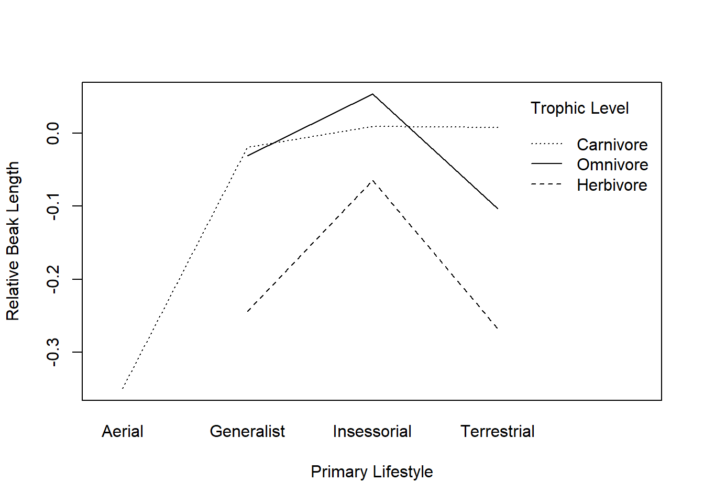
Where the interaction plot is parallel, there is no interaction. This is seen well in comparing the omnivore and herbivore plots. However, the carnivore plot shows interaction with the omnivore plot, as they are not parallel and intersect.